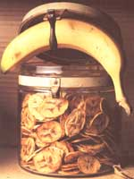

Preserving food may not leap to mind as a mid-winter activity. But at our house, dry-preserving goes on year-round since the kids' favorite school snacks are dried fruit-pulp "leathers:" As a result, the canisters of dried goodies need continual replenishing.
Drying is the easiest and oldest food-preservation method known. Thousands of years ago, our forebears learned that by removing moisture from food, they could concentrate natural salts and sugars so that the action of decay enzymes was slowed and bacteria and molds would not flourish. Here in the Americas, corn and beans were left in the field to dry, berries and sectioned squash were sun- or air-dried on mats, and meat and fish were salted and dried over smoky fires.
Even in the computer age, you can achieve good (if slow) results drying food the natural way with the heat of the sun or by putting cold weather to work (frozen water will gradually "sublime" off). You'll get faster and more consistent results in any season and any weather by drying in a slow, 120°F oven with the door cracked. ( See Build a Food Dryer to learn how to construct your own multiple-energy food dryer for a fraction of the cost of purchasing one.)
When drying food, keep in mind that it must be dry through to the center, and that the thinner you slice the food, the faster it will dry and the better it will keep. Next fall, practice country frugality and use ground-falls, blemished, or even wormy fruit by carefully cutting out the defects before drying. In cold weather, you can get cut-priced fruit from the over-aged-produce racks at the back of the store, cut out the bad spots and dry the rest.
You can save money (and avoid the MSG, sulfur, and other additives in commercial-dried products) by cutting fruit that's edible out-of-hand into 1/2" to 1/4" thick slices and drying it yourself. Slices of tart eating apples, plums, or apricot halves are the best teething rings around. A bland and mealy banana becomes sugary circles of tropical flavor. Pineapple becomes a tangy, all-natural candy you'll want to give the kids. (Before drying, dip sliced fruit briefly in a mixture of six 500-mg. tablets of ascorbic acid - vitamin C - dissolved in two cups of water to preserve the color.)
Raspberries can be dried but become hard little seed balls. Strawberries are great; hull and halve, mix with an equal part of sugar, let sit to bring out juice, then dry. Peel, slice, and dry rhubarb stalks (not the toxic leaves). Refresh for several hours in cool water along with strawberries for February pies that will surprise you with their summer flavor. Pit sour pie cherries and mix with an equal measure of sugar as with strawberries. Bring currants to a rolling boil in equal parts of sugar and water, skim off the fruit, and dry for hot-cross buns. You can use the currant juice in leathers or add it to apple juice for jelly.
If you grow your own seedless grapes and prune plums, you can make raisins and prunes, but you'll first need time to cure in the skin. Splitting the fresh fruit for curing is time-consuming and best done the old way - over two days or more between screens in a hot sun during dry weather. For a sweet-sour treat, cut ends off any citrus fruit, section in rounds, and layer in pans of sugar before drying.
Try drying rounds of meaty, plum-type tomatoes: sprinkle some with a little sugar, salt, and dried basil or oregano. (In this and all other recipes, use canning salt or flaked and un-iodized Kosher salt.) They're good eaten out of hand or refreshed in water for soups and stews.
If you make prize-winning fruitcake, add to its uniqueness by making your own citron. Pare the outer rind from fresh citron or watermelon. Dice the hard, white inner rind into 1/4" cubes and color by soaking in sweetened, rich carrot juice (for yellow), or currant, berry, or beet juice (for red). If you must, soak the cubes in a rich solution of sugar, lemon juice, and red or green food coloring. Let dry.
If you think dried fruit is expensive, check the price of commercial leathers - over half-a-buck an ounce! Plus, they are made from concentrates, and have monoglycerides, fatty oils, red dye # 40 or other chemicals. The basis of most home dried leathers is fresh apple pulp, so pick or buy a bushel or three of tart (but not sour) eating apples: Macintosh, Cortland, Macoun, Granny Smith, and such. Golden Delicious apples make a good leather, but bland varieties (such as Red Delicious) taste like cardboard, and cooking apples are too sour.
Wash apples well, quarter, and remove blemishes and cores. Don't bother peeling, which will reduce the color and nutrients. Add a little water if apples are dry and grind in a food processor or blender till skins are chopped fine. For a brittle but nutritious raw-fruit leather, press out juice in a strainer, and dry. For better consistency, add a dash of low-fat oil before blending. You can dry raw, unpressed leather pulp, but will have to place it in a shallow pan for the first phase of drying. For faster and easier drying and longer storage life, keep all the sweetness and flavor by cooking most of the water out. (This may result in some vitamin and taste loss.) On low heat, I bring the pulp to a slow simmer and cook till thick enough so that bubbles pop to the top. Cooking at too high a temperature will scorch the bottom; microwaves won't evaporate enough water.
For variety, add pie spices, a little sugar, and perhaps a pinch of salt before cooking apple pulp. For brighter color and flavor, toss in a handful or two of pitted cherries, strawberries, or any bush or cane berry. Add as much sugar as fruit if adding sour cherries, cranberries, or currants. For blueberries, add half as much sugar as fruit, plus a dash of lemon juice, a little grated nutmeg, and perhaps a handful of grated lemon rind; indeed, I like to add finely-shredded lemon, orange, or lime rind to any fruit leather for added crunch and tang.
Combine chunks of peeled, cored quince with an equal amount of sugar, and cook with an equal volume of apple pulp to provide a spicy tang. Frozen juice concentrates add a nice tang and color; I particularly like the sour-sweet tang of grapefruit-concentrate/apple leather and the kids find it as zippy as those acid flavored candies sold in stores.
You can make leather from any tart, firm-fleshed fruit, by itself or stretched with apples. Apricots make a wonderful leather. So do plums, pears spiced with ground cloves or another fruit-pie spice, and de-seeded paste-type tomatoes sweetened with brown sugar. Just grind and cook them all till thick.
Store all dried fruit products in an airtight container in a cool, dry place. I store leathers in Ziploc bags with the air sucked out. For use, I keep a revolving supply of leathers in a big old metal cracker tin with a tight lid to keep out moisture and mice. Haven't found a way yet to keep the kids out, but what's better for kids to nibble: home-dried fruit or store-bought Yuckies and Death-Cakes?
Cover drying-rack screens with sheets of wax paper that have a two-inch circle torn out of the center. Pat the cooled, partly jelled pulp around the center hole in the paper into a thin, donut-shaped patty. Dry till top is firm. Turn over, peel off the wax paper, and dry till you can handle it. Then, cut into two-inch-wide strips and leave in the dryer till the leather lives up to its name - thoroughly dry, but still flexible. Strips of fruit leather shaken in a bag with powdered sugar or cornstarch to prevent sticking make a great school snack or anytime treat for the kids and offer quick, natural energy on hikes.
Do you bake carrot or zucchini cake? Try making leathers from well-ground young vegetables (scrubbed but not peeled) and cook till tender with the sweeteners and spices you use in your baked products. Just remember that flavors concentrate on drying, so go easy with the flavorings. Or make tomato leather from firm, high-acid tomatoes and your favorite pizza or spaghetti spices plus a little salt and sugar. Make corn-relish leather from sweet corn cut off the cob and ground with a touch of turmeric and salt. Grind and cook in sweetened, diluted cider vinegar. How about pumpkin-pie leather? Quarter pumpkin or winter squash, pare, remove seeds and strings, and cut the meat into chunks. Mix in sugar and pie spices with enough water to cover and cook to a paste. Dry as any fruit leather. Then, oven-roast the raw seeds in a little oil with a sprinkling of salt for snacking.
The more you practice drying fruits, (and other foods), the more creative concoctions you'll come up with. As Gen MacManniman, the mother of modern home food-drying, put it in the title of her fine little book: "Dry it - You'll like it:"
Dried vegetables aren't all that appetizing eaten out of hand, but once refreshed, they add flavor, texture, and nutrients to winter soups and stews. They also store readily in air-tight containers, and most root crops dry well. Slice thin and then dry rounds of carrots steamed for five minutes, new potatoes steamed for three minutes, or rounds of parsnips, young turnips, kohlrabi, or salsify boiled till crisp-done. Some people dry sweet corn on the cob: dunk for three minutes in boiling water, cool, and cut off the cob before drying. (I find that the corn shrivels to nothing and has little flavor.) It's easiest to leave peas and beans on the vine to mature and dry in the field. Shell, winnow, and store your varicolored soldier and overgrown green/yellow edible pod and shellbeans, green and yellow peas, limas and field beans, and peas in sparkling glass jars and stack on kitchen shelves for a visual as well as tasty treat. But try blanching young green and yellow bean pods briefly in boiling water. When cool, split lengthwise, and dry.
Don't waste dryer time on hot peppers; string 'em on thread and hang in the sun on the porch or in fly-deterring cheesecloth bags from the barn rafters. Blanch whole bell peppers for one minute, skin, halve, and remove pulp and seeds. Then dice and put in the dryer. As you know if you cook Oriental dishes, mushrooms dry and refresh beautifully. Unless you keep yer own 'shroom cellar, the cultivated variety is hardly worth the bother, but if you are a knowledgeable wild-fungus hunter, sprinkle 1/2"-thick slices or dices of well-brushed mushrooms with salt, and leave till water runs out. Press out remaining water and dry till they shrivel. After refreshing the 'shrooms with water, you can enjoy their earthy flavor in teas, stews, eggs, and soups for months. Celery stalks dry to nothing but string, but the leafy heads retain their stew-flavoring tang if you dry them after dipping them briefly in boiling water. Do the same with parsley, basil, and other leafy pot-herbs that don't hold their strength or color when they're air-dried hanging from the porch roof. I tried blanching and drying split flowerettes and peeled stem rounds of broccoli, but it didn't reconstitute to a very tasty product. I've never dried summer squash, spinach, scallions, or other salad veggies. Nor have I dried onions, garlic, winter squash, or potatoes and other good keeping vegetables. But it can be done.
To refresh any vegetable, soak in several changes of cool water till it has regained most of its live size. Discard the water. Use in any recipe that requires long, slow cooking. An all-dried vegetable soup makes a complete meal - especially when simmered with beans or dried meat.
|
 JOHN VIVIAN Dried goods that stays fresh makes it easy to have delicious meals all year long. |
|
|